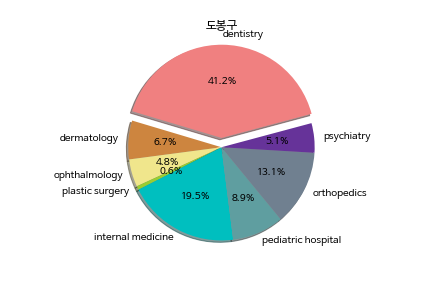
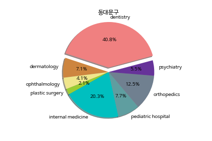
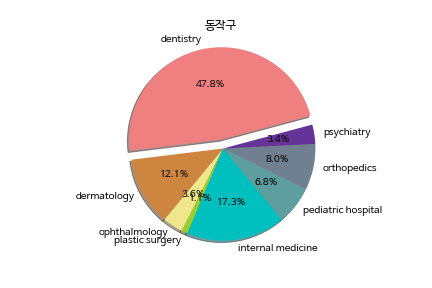
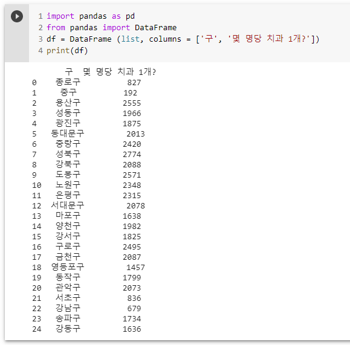

healthy_Python
welcome to healthy_Python
병원이 진료과목별로 주변환경과 어떤
상관관계가 있는지를 지도와 병원 리뷰어플과
사이트에서의 데이터를 활용해 분석해볼 예정입니다.
병원 진료과목에 따른 주변환경 조사
- 치과 입지
- 서울시에서 구 별 치과 수
- 구별로 인구 000명당 치과 1개
치과 입지
Google Maps를 사용해서 관악구에 있는 치과를 검색 해봤습니다.
검색 해본 결과, '심플치과', '마루치과병원', '뉴욕치과', '서울화인치과',
'합격치과의원', '송치과의원', '참사랑치과의원', '오케이치과', '김&안치과',
'예인치과의원', '보람치과의원', '가이치과의원', '도경치과의원', '오윤배치과의원',
'최유석치과의원', '이든치과', '치과마일스톤즈', '이혁치과의원', '두산열린치과의원',
'이근하치과의원', '서울치과의원', '관악서울치과'까지 검색되었습니다.



서울시에서 구 별 치과 수
파이썬의 통계 기능을 사용해서 구별로 인구와 치과 수를 비교해봤습니다
